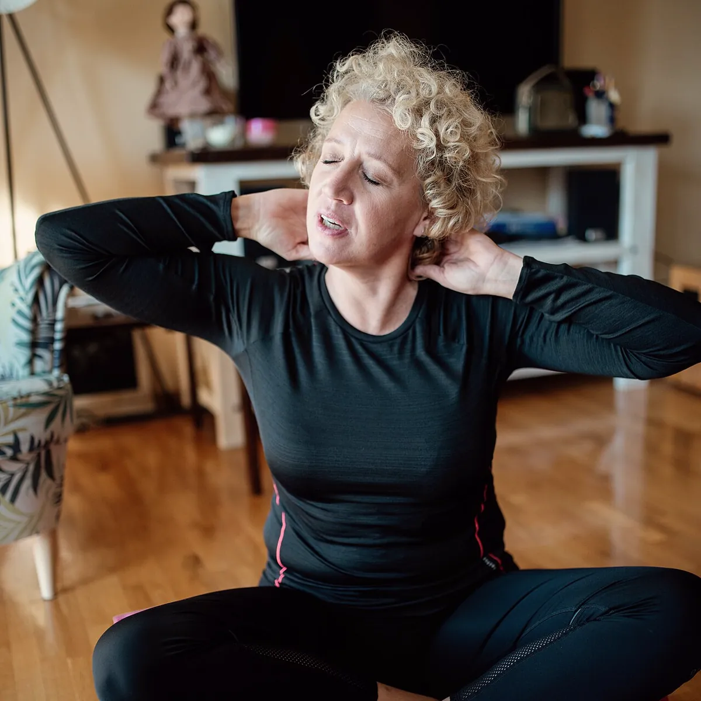

ವ್ಯಾಯಾಮ ಚಿಕಿತ್ಸೆ
ನಿಮ್ಮ ವಯಸ್ಸು, ದೇಹ ಮತ್ತು ಸ್ಥಿತಿಗೆ ಆಯ್ದ ವ್ಯಾಯಾಮಗಳು. ನಿಯಮಿತ ಅಭ್ಯಾಸ ಶಕ್ತಿ, ನಮ್ಯತೆ ಮತ್ತು ಆರೋಗ್ಯ ನೀಡುತ್ತದೆ.

ಹೇಗೆ ಸಹಾಯ ಮಾಡುತ್ತದೆ
- ದೇಹದ ನೋವನ್ನು ಕಡಿಮೆ ಮಾಡಲು ಸಹಾಯಕ
- ಸ್ನಾಯು ಬಲವನ್ನು ಹೆಚ್ಚಿಸುತ್ತದೆ
- ಚಲನೆಯನ್ನು ಉತ್ತಮಗೊಳಿಸುತ್ತದೆ
- ನಮ್ಯತೆಯನ್ನು ಹೆಚ್ಚಿಸುತ್ತದೆ
- ಆರೋಗ್ಯಕರ ತೂಕಕ್ಕೆ ಪೂರಕ
- ಸಕ್ಕರೆ ಮತ್ತು ಬಿಪಿಗೆ ಉತ್ತಮ ಅಭ್ಯಾಸಗಳಿಗೆ ಪೂರಕ
- ಒಟ್ಟಾರೆ ಸ್ವಾಸ್ಥ್ಯಕ್ಕೆ ಪೂರಕ
ನಾವು ನೀಡುವುದು
- ಬೆನ್ನು ನೋವು
- ಕುತ್ತಿಗೆ ನೋವು
- ಮೊಣಕಾಲು ನೋವು
- ಭುಜದ ನೋವು
- ತೂಕ ನಿರ್ವಹಣೆ
- ಮಧುಮೇಹ ಸ್ನೇಹಿ ವ್ಯಾಯಾಮ
ನಿಮಗೆ ಯಾವುದು ಸೂಕ್ತ ಎಂದು ನಮ್ಮ ವೈದ್ಯರನ್ನು ಕೇಳಿ.
ಈ ತಾಣದ ಮಾಹಿತಿ ಸಾಮಾನ್ಯ ಸ್ವಾಸ್ಥ್ಯ ಅರಿವಿಗಾಗಿ ಮಾತ್ರ. ಇದು ರೋಗನಿರ್ಣಯ ಅಥವಾ ಗುಣಪಡಿಸುವ ಭರವಸೆ ಅಲ್ಲ; ವೈದ್ಯಕೀಯ ಸಲಹೆಗೆ ಪರ್ಯಾಯವೂ ಅಲ್ಲ. ನಿಮಗೆ ಸೂಚಿಸಿದ ಚಿಕಿತ್ಸೆಯನ್ನು ಮುಂದುವರಿಸಿ ಮತ್ತು ಅರ್ಹ ವೈದ್ಯರನ್ನು ಸಂಪರ್ಕಿಸಿ. ನಮ್ಮ ಸೇವೆಗಳನ್ನು ಅರ್ಹತೆ ಮತ್ತು ಕಾನೂನು ವ್ಯಾಪ್ತಿಯೊಳಗೆ ನೀಡಲಾಗುತ್ತದೆ. ಸಾಂದರ್ಭಿಕ ಚಿತ್ರ.